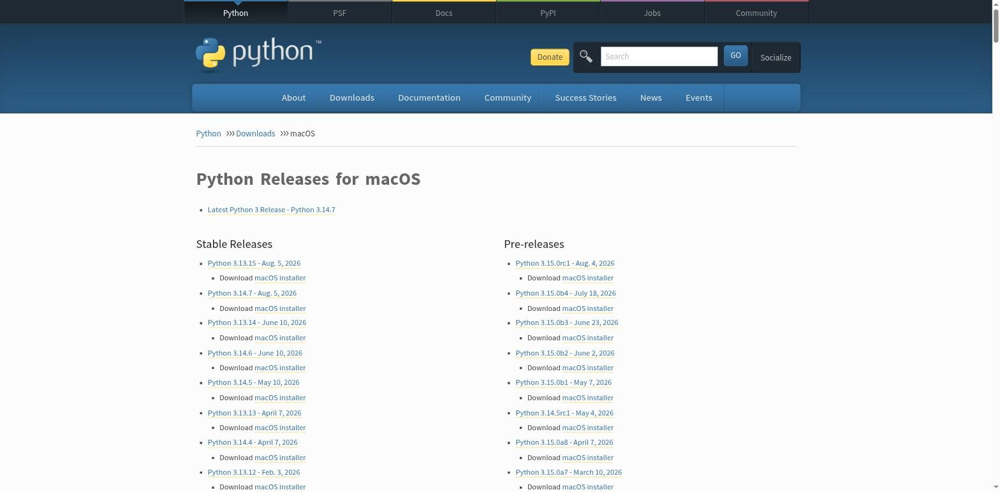

Установка Python на macOS
Официальный универсальный установщик — и почему системный Python лучше не трогать.
На современном macOS уже есть команда /usr/bin/python3 — но
это не «ваш» Python, а Apple-контролируемый инструмент: он поставляется
вместе с Xcode / Command Line Tools for Xcode и предназначен для внутренних нужд самой
macOS и стороннего ПО, которое на него полагается. Обычно это заметно более старая и
неполная сборка Python, чем актуальный релиз с python.org. Устанавливать в него сторонние
пакеты, обновлять или удалять его — плохая идея: вы можете сломать инструменты, от него
зависящие.
/usr/bin/python3 и не удаляйте его — это официальная рекомендация docs.python.org: этот Python Apple-контролируемый и используется системным и сторонним ПО. Вместо этого поставьте отдельную, «вашу собственную» версию Python с python.org — так делают профессиональные разработчики, и оба Python спокойно сосуществуют на одном компьютере.Шаг 1. Скачайте установщик
Откройте python.org/downloads/macos. Официальный установщик для macOS —
универсальный (universal2) пакет .pkg: один и тот
же файл работает и на Mac с процессором Apple Silicon (M1/M2/M3/M4), и на Mac с процессором
Intel.

Шаг 2. Запустите установщик
Откройте скачанный .pkg-файл и пройдите стандартный мастер
установки macOS (Введение → Лицензия → Место установки → Установка). В отличие от Windows,
здесь нет отдельной галочки про PATH — установщик macOS сам настраивает всё необходимое.
Шаг 3. Проверьте установку
Откройте приложение Terminal и введите:
python3 --versionpython без суффикса обычно вообще не существует. Так было не всегда: на очень старых версиях macOS (до Catalina, 2019 год) команда python исторически указывала на системный Python 2 — но это осталось в прошлом, а не текущее поведение. Официальный установщик python.org ставит команду именно как python3. Мы разберём, как сделать команду python удобной внутри виртуального окружения, в разделе 2.10.Вы должны увидеть что-то вроде Python 3.14.7. Если терминал
показывает более старую версию (например, Python 3.9.6) — это,
вероятно, Apple-контролируемый /usr/bin/python3, а не тот
интерпретатор, что вы только что установили; проверьте порядок PATH (раздел 2.4) или явно
укажите путь через sys.executable (раздел 2.6), чтобы убедиться,
какой именно python3 реально запускается.